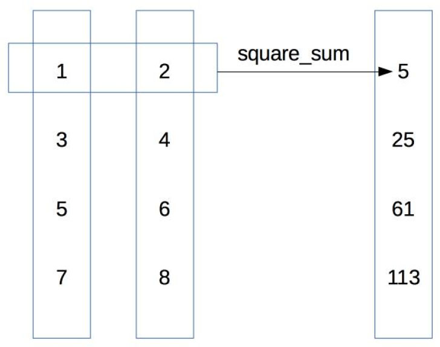

7.4 高阶函数
1．lambda与map
上面的讲解都围绕着一个中心，函数能像一个普通对象一样应用，从而成为其他函数的参数和返回值。能接收其他函数作为参数的函数，被称为高阶函数（high-order function）。7.3节中介绍的装饰器，本质上就是高阶函数。高阶函数是函数式编程的一个重要组成部分。本节我们讲介绍最具有代表性的高阶函数：map()、filter()和reduce()。
在开始之前，首先引入一种新的定义函数的方式。我们已经见过很多用def来定义函数的例子。除了def，还可以用lambda语法来定义匿名函数，例如：
lambda_sum = lambda x,y: x + y
print(lambda_sum(3,4))
通过lambda，我们创建了一个匿名的函数对象。借着赋值语句，这个匿名函数赋予给函数名lambda_sum。函数的参数为x、y，返回值为x与y的和。函数lambda_sum()的调用与正常函数一样。这种用lambda来产生匿名函数的方式适用于简短函数的定义。
现在我们来看高阶函数。所谓高阶函数，就是能处理函数的函数。在第1章中，我们就已经见过了函数对象参数。那个接收函数对象为参数的函数，就是高阶函数。Python中提供了很多有用的高阶函数。我们从map()开始介绍。函数map()是Python的内置函数。它的第一个参数就是一个函数对象。函数map()把这一个函数对象作用于多个元素：
data_list = [1,3,5,6]
result= map(lambda x: x+3,data_list)
函数map()的第二个参数是一个可循环对象。对于data_list的每个元素， lambda函数都会调用一次。那个元素会成为lambda函数的参数。换个角度说，map()把接收到的函数对象依次作用于每一个元素。最终，map()会返回一个迭代器^(1)^{#ch1-back}。迭代器中的元素，就是多次调用lambda函数的结果。因此，上面的代码相当于：
def equivalent_generator(func, iter):
for item in iter:
yield func(item)
data_list = [1,3,5,6]
result = map(lambda x: x+3, data_list)
上面的lambda函数只有一个参数。这个函数也可以是一个多参数的函数。这个时候，map()的参数列表中就需要提供相应数目的可循环对象。
def square_sum(x, y):
return x**2 + y**2
data_list1 = [1,3,5,7]
data_list2 = [2,4,6,8]
result= map(square_sum,data_list1, data_list2)
这里，map()接收了square_sum()作为第一个参数。数square_sum()要求有两个参数。因此，map()调用时需要两个可循环对象。第一个循环对象提供了square_sum()中对应于 x 的参数，第二个循环对象提供了对应于 y 的参数。它们的关系如图7-3所示。

图7-3 两个循环对象之间的关系
一定程度上，map()函数能替代循环的功能。用map()函数写出的程序，看起来也相当简洁。从另一个角度来说，map()看起来像是对多个目标“各个击破”。在并行运算中，Map是一个很重要的过程。通过Map这一步，一个大问题可以分拆成很多小问题，从而能交给不同的主机处理。例如在图像处理中，就可以把一张大图分拆成许多张小图。每张小图分配给一台主机处理。
2．filter函数
和map()函数一样，内置函数filter()的第一个参数也是一个函数对象。它也将这个函数对象作用于可循环对象的多个元素。如果函数对象返回的是True，则该次的元素被放到返回的迭代器中。也就是说，filter()通过调用函数来筛选数据。
下面是使用filter()函数的一个例子。作为参数的larger100()函数用于判断元素是否比100大：
def larger100(a):
if a > 100:
return True
else:
return False
for item in filter(larger100,[10,56,101,500]):
print(item)
类似的，filter()用于多参数的函数时，也可以在参数中增加更多的可循环对象。总的来说，map()函数和filter()函数的功能有相似的地方，都是把同一个函数应用于多个数据。
3．reduce函数
函数reduce()也是一个常见的高阶函数。函数reduce()在标准库的functools包中^(2)^{#ch2-back}，使用之前需要引入。和map()、reduce()一样，reduce()函数的第一个参数是函数，但reduce()对作为参数的函数对象有一个特殊要求，就是这个作为参数的函数必须能接收两个参数。Reduce()可以把函数对象累进的作用于各个参数。这个功能可以用一个简单的例子来说明：
from functools import reduce
data_list = [1,2,5,7,9]
result = reduce(lambda x, y: x + y, data_list)
print(result) # 打印24
函数reduce()的第一个参数是求和的sum()函数，它接收两个参数x和y。在功能上，reduce()累进的运用传给它的二参函数。上一次运算的结果将作为下一次调用的第一个参数。首先，reduce()将用表中的前两个元素1和2做sum()函数的参数，得到3。该返回值3将作为sum()函数的第一个参数，而将表中的下一个元素5作为sum()函数的第二个参数，进行下一次求和得到8。8会成为新的参数，与下一个元素7求和。上面过程不断重复，直到列表中元素耗尽。函数reduce()将返回累进的运算结果，这里是一个单一的整数。上面的例子相当于(((1+2)+5)+7)+9，结果为24。也就是如图7-4所示过程。

图7-4 累进运算过程
函数reduce()通过某种形式的二元运算，把多个元素收集起来，形成一个单一的结果。上面的map()、reduce()函数都是单线程的，所以运行效果和循环差不多。但map()、reduce()可以方便地移植到并行化的运行环境下。在并行运算中，Reduce运算紧接着Map运算。Map运算的结果分布在多个主机上，Reduce运算把结果收集起来。因此，谷歌用于并行运算的软件架构，就称为MapReduce^(3)^{#ch3-back}。
4．并行处理
下面的程序就是在多进程条件下使用了多线程的map()方法。这段程序多线程地下载同一个URL下的资源。程序用了第三方包requests来进行HTTP下载：
import time
from multiprocessing import Pool
import requests
def decorator_timer(old_function):
def new_function(*arg, **dict_arg):
t1 = time.time()
result = old_function(*arg, **dict_arg)
t2 = time.time()
print("time: ", t2 - t1)
return result
return new_function
def visit_once(i, address="http://www.cnblogs.com"):
r = requests.get(address)
return r.status_code
@decorator_timer
def single_thread(f, counts):
result = map(f, range(counts))
return list(result)
@decorator_timer
def multiple_thread(f, counts, process_number=10):
p = Pool(process_number)
return p.map(f, range(counts))
if __name__ == "__main__":
TOTAL = 100
print(single_thread(visit_once, TOTAL))
print(multiple_thread(visit_once, TOTAL))
在上面的程序中，我们启动了10个进程，并行地处理100个下载需求。这里把单个下载过程描述为一个函数，即visit_once()，然后用多线程的map()方法，把任务分配给雇佣来的10个工人，也就是10个进程。从结果可以看到，运行时间能大为缩短。